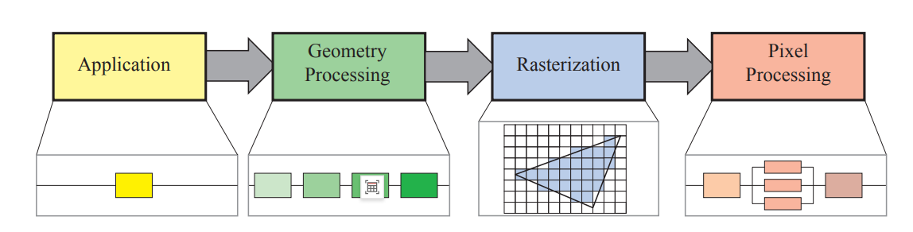
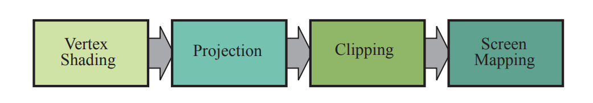
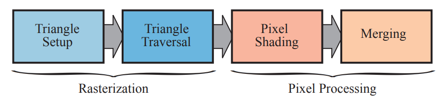

本文简要介绍实时渲染的基础数学知识，渲染管线，以及面试常见问题
数学基础
坐标表示
在三维计算机图形学中，我们通常使用**齐次坐标（Homogeneous Coordinates）**来表示点和向量。
三维空间点变换时为什么需要齐次坐标？
这主要是为了解决“平移”运算的线性化问题。在普通的三维笛卡尔坐标系中，旋转和缩放可以通过 $3 \times 3$ 矩阵与向量相乘（线性变换）来实现，但平移仅仅是向量的加法，无法合并进同一个 $3 \times 3$ 矩阵乘法中。
通过引入第四个分量 $w$，将三维向量 $(x, y, z)$ 扩展为四维向量 $(x, y, z, w)$，我们就能够将平移、旋转和缩放全部统一到一个 $4 \times 4$ 的矩阵乘法运算中。对于点，通常设置 $w=1$，表示位置；对于方向向量，设置 $w=0$，意味着它不受平移影响（因为方向只有朝向和大小，没有具体位置）。这种统一性使得图形硬件（GPU）能够用一套通用的逻辑快速处理所有类型的变换。
物体变换矩阵
物体变换通常涉及三个基础操作：平移（Translation）、旋转（Rotation）和缩放（Scale）。
平移、缩放、旋转物体变换矩阵分别是？
-
平移矩阵：基于齐次坐标，我们将平移量 $(t_x, t_y, t_z)$ 放在矩阵的最后一列。
$$ T = \begin{bmatrix} 1 & 0 & 0 & t_x \\ 0 & 1 & 0 & t_y \\ 0 & 0 & 1 & t_z \\ 0 & 0 & 0 & 1 \end{bmatrix} $$ -
缩放矩阵：缩放因子 $(s_x, s_y, s_z)$ 位于矩阵的对角线上。
$$ S = \begin{bmatrix} s_x & 0 & 0 & 0 \\ 0 & s_y & 0 & 0 \\ 0 & 0 & s_z & 0 \\ 0 & 0 & 0 & 1 \end{bmatrix} $$ -
旋转矩阵：绕主轴的旋转稍微复杂一些。例如，绕 Z 轴旋转 $\theta$ 角的矩阵为：
$$ R_z(\theta) = \begin{bmatrix} \cos\theta & -\sin\theta & 0 & 0 \\ \sin\theta & \cos\theta & 0 & 0 \\ 0 & 0 & 1 & 0 \\ 0 & 0 & 0 & 1 \end{bmatrix} $$绕 X 轴和 Y 轴的旋转矩阵结构类似，只是正余弦项的位置不同。
有什么缩小矩阵运算的技巧？
最核心的技巧是矩阵级联（Matrix Concatenation）。由于矩阵乘法满足结合律（但不满足交换律），如果我们有一系列的变换（例如先缩放 $S$，再旋转 $R$，最后平移 $T$），我们不需要对场景中的几百万个顶点依次进行三次矩阵乘法。
我们可以预先计算出一个“模型矩阵” $M = T \times R \times S$。这样，对于每一个顶点 $v$，只需要计算一次 $v' = M \times v$ 即可。这极大地减少了计算量。此外，对于视图变换和投影变换，也可以继续合并，形成最终的 $MVP$（Model-View-Projection）矩阵。
四元数基础
四元数是复数的扩展，形式为 $q = w + xi + yj + zk$。在计算机图形学中，用于表示旋转的四元数必须是单位四元数，即模长（Norm）为 1。使用单位四元数能保证在旋转运算过程中，物体仅发生方向改变而不会产生形变。
四元数通过“轴-角”对直观描述旋转。若绕单位向量轴 $\mathbf{u} = (u_x, u_y, u_z)$ 旋转角度 $\theta$，其四元数表示为：
$$ q = (\cos(\frac{\theta}{2}), \sin(\frac{\theta}{2})\mathbf{u}) $$$$ w = \cos(\frac{\theta}{2}) $$$$ (x, y, z) = \sin(\frac{\theta}{2}) \cdot (u_x, u_y, u_z). $$三、向量旋转运算与共轭优化
要旋转三维向量 $v$，需将其转换为实部为 0 的纯虚四元数
$$ v_{pure} = (0, v_x, v_y, v_z) $$标准旋转公式为
$$ v_{rotated} = q \cdot v_{pure} \cdot q^{-1} $$在实时渲染中，利用单位四元数性质
$$ |q|=1 $$，可得其逆等于共轭
$$ q^{-1} = q^* $$。共轭四元数计算只需对虚部取反 $q^* = (w, -x, -y, -z)$。
因此运算优化为
$$ v_{rotated} = q \cdot v_{pure} \cdot q^* $$，这避免了计算逆矩阵时的昂贵除法运算。 相较于欧拉角和矩阵，四元数在角色动画插值中更具优势：
- 避免万向节死锁（Gimbal Lock）：欧拉角在特定角度会丢失一个自由度，四元数则不会。
- 计算效率与数值稳定性：矩阵插值计算量大且容易导致非正交化（物体变形），四元数更高效。
- 球面线性插值（Slerp）：Slerp 能在四元数构成的 4D 球面上沿最短弧线进行均匀插值，保证旋转角速度恒定。若使用普通线性插值（Lerp），会导致旋转速度不均匀（忽快忽慢）。
其他表示物体平移旋转缩放的方式
除了存储 $4 \times 4$ 矩阵，物体变换常采用 TRS 结构化存储：位置向量（Position, $P$）、旋转四元数（Rotation, $R$）、缩放向量（Scale, $S$）。这种方法在处理物理碰撞或逻辑判断时，避免了构建完整矩阵的开销。
将局部空间向量 $v$ 变换到世界空间，必须遵循 缩放 -> 旋转 -> 平移 的顺序：
- 缩放：对应分量相乘，$v_{scaled} = (x \cdot s_x, y \cdot s_y, z \cdot s_z)$。
- 旋转：将 $v_{scaled}$ 视为纯虚四元数，利用 $R$ 进行三明治乘法
，提取结果的虚部。 3. 平移：直接加上位置向量，
$$ v_{final} = v_{rotated} + P $$变换顺序不可交换，否则会导致错误结果： 先旋转再缩放：若发生非统一缩放，缩放轴会随物体旋转而改变，导致物体产生剪切（Shear）形变。 先平移再旋转：物体将绕世界原点公转，而非绕自身中心自转，导致位置偏移。
四元数基础
在处理旋转时，除了矩阵和欧拉角，四元数（Quaternion）是实时渲染中非常重要的工具，特别是在动画插值方面。
什么是单位四元数？
四元数是由一个实部和三个虚部构成的复数扩展，形式为 $q = w + xi + yj + zk$。当四元数的模长（Norm）为 1 时，它被称为单位四元数。在计算机图形学中，我们只使用单位四元数来表示旋转。
四元数怎么表示物体的多少旋转？
四元数通过“轴-角”对来直观地描述旋转。假设你想绕着一个单位向量轴
$$ \mathbf{u} = (u_x, u_y, u_z) $$旋转角度 $\theta$，对应的四元数表示为：
$$ q = (\cos(\frac{\theta}{2}), \sin(\frac{\theta}{2})\mathbf{u}) $$即
$$ w = \cos(\frac{\theta}{2}) $$，而虚部向量
$$ (x, y, z) = \sin(\frac{\theta}{2}) \cdot (u_x, u_y, u_z) $$。相比于欧拉角，四元数避免了“万向节死锁”（Gimbal Lock）问题，并且计算效率较高。
其他表示物体平移旋转缩放的方式
除了矩阵变换，还有哪种计算物体平移旋转缩放变换的方法？
另一种常见的方法是TRS 分量表示法（或者叫变换分解法）。即不直接存储一个 $4 \times 4$ 矩阵，而是将物体的状态数据结构化存储为三个独立的分量：
- 位置向量（Position，Vector3）
- 旋转四元数（Rotation，Quaternion）
- 缩放向量（Scale，Vector3）
两种方法的适用情景是？
-
TRS 分量法（适用于 CPU 端的逻辑与动画）：
当需要对物体进行物理模拟、碰撞检测或者动画插值时，TRS 是首选。因为矩阵很难直接进行线性插值（两个旋转矩阵相加再平均，结果往往不再是旋转矩阵），而位置向量可以进行线性插值（Lerp），四元数可以进行球面线性插值（Slerp），这能产生平滑自然的动画过渡。
-
矩阵法（适用于 GPU 端的渲染）：
当数据准备好要发送给显卡进行顶点着色时，矩阵是绝对的标准。因为 GPU 的硬件设计就是为了并行处理大规模的矩阵向量乘法。通常的做法是：在 CPU 端维护 TRS 状态，每帧更新后计算出对应的 Model Matrix，然后传给 GPU。
法线变换
法线（Normal）是垂直于物体表面的方向向量，用于光照计算。它在变换时需要特殊处理。
什么情况下法线变换和普通的坐标变换相同？
当变换矩阵仅包含平移、旋转和统一缩放（Uniform Scale，即 $x,y,z$ 轴缩放倍数相等）时，法线变换矩阵与物体变换矩阵是一致的（或者说仅差一个缩放系数，归一化后就相同了）。这是因为旋转和统一缩放保持了角度的正交性。
为什么一般情况下不能使用普通的坐标变换？
当物体发生非统一缩放（Non-uniform Scale）时，普通变换会破坏法线的垂直性。
举个例子：如果你将一个球体在 Y 轴方向压扁，表面上的切线向量会随之变得平缓，如果你直接用同样的矩阵去变换法线，法线也会在 Y 轴上被“压扁”，结果就是法线不再垂直于压扁后的表面，导致光照计算错误。
为了修正这个问题，我们使用物体变换矩阵的**逆转置矩阵（Inverse Transpose Matrix）**来变换法线。即，如果模型矩阵是 $M$，那么专门用于法线的变换矩阵 $N$ 应该是：
$$ N = (M^{-1})^T $$这个数学推导保证了变换后的法线依然与变换后的表面切线保持垂直。
渲染管线
渲染管线示意图如下：
|
|

应用程序
这一阶段完全在 CPU 上执行，主要负责游戏逻辑、物理模拟、输入处理等。对于渲染而言，CPU 需要识别出潜在可见的网格实例，并将其提交给 GPU。
在此阶段，Draw Call（绘制调用） 是一个关键概念。Draw Call 是 CPU 调用图形 API（如 OpenGL 的 glDrawArrays 或 DirectX 的 DrawIndexed）命令 GPU 进行渲染的操作。每次调用 Draw Call 时，CPU 都需要进行状态切换和数据准备，这会产生显著的驱动层开销。因此，如果一帧内的 Draw Call 数量过多，CPU 就会忙于发送指令而无法及时完成帧逻辑，导致 GPU 空闲等待，形成 CPU 瓶颈。这也是为什么在优化时常采用合批（Batching）技术或 GPU Instancing 来减少 Draw Call 的原因。
几何处理
几何处理阶段主要在 GPU 上运行，负责处理顶点和多边形数据。

顶点着色
顶点着色器（Vertex Shader）是这一阶段的核心可编程单元。它的首要任务是进行坐标变换，将顶点位置从模型空间（Model Space）经过模型变换、视图变换，最终通过投影变换转换到裁剪空间。这一连串的矩阵通常被称为 MVP 矩阵。此外，顶点着色器还常用于计算顶点光照或处理骨骼动画的蒙皮（Skinning）。
投影
投影操作将 3D 的观察空间转换为裁剪空间，主要分为透视投影和正交投影。
- 透视投影：模拟人眼“近大远小”的效果，其投影矩阵会将视图空间的 Z 值写入齐次坐标的 w 分量中，以便后续进行透视除法。
- 深度非线性：值得注意的是，经过透视投影和透视除法后的深度值（Z值）在 [0, 1] 或 [-1, 1] 区间内通常是非线性的。近平面的精度很高，而远平面的精度迅速降低，这种分布特性在远距离物体叠加时容易引发 Z-fighting（深度冲突） 现象。
细分、几何着色和流处理
这是几个可选的 GPU 阶段。
- 细分曲面（Tessellation）：利用 Hull Shader 和 Domain Shader 将低模网格动态细分为高模，增加几何细节。
- 几何着色器（Geometry Shader, GS）：可以处理图元并生成新的几何体（如将点扩展为四边形）。但在现代渲染开发及面试中，常会提到不推荐过度使用 GS，因为其在某些硬件上的并行效率较差，容易阻塞管线，目前的趋势是使用 Compute Shader 或 Mesh Shader 作为更高效的替代方案。
裁剪
裁剪（Clipping）是一个固定功能的硬件操作。它与剔除（Culling）不同：剔除通常指直接丢弃完全不可见的物体或三角形（如视锥体剔除或背面剔除），而裁剪是指当一个图元（如三角形）部分在视锥体内、部分在视锥体外时，硬件会通过计算生成新的顶点，将位于视锥体外部的部分切掉，重新构建成位于内部的多边形。
屏幕映射
经过投影和透视除法后，顶点坐标处于标准化设备坐标系（NDC）中。屏幕映射将这些坐标变换为屏幕像素坐标。在此处，不同的图形 API 标准存在差异：OpenGL 的 NDC Z 轴范围通常是 [-1, 1]，而 DirectX 的 Z 轴范围是 [0, 1]，这会直接影响投影矩阵的推导和深度值的计算方式。
光栅化
光栅化阶段的目标是将几何数据（连续的三角形）转化为片元（离散的像素候选者）。

三角形设置
此阶段计算三角形的边界方程和面属性。硬件通常会在此处执行背面剔除（Back-face Culling）。其原理是根据顶点的缠绕顺序（顺时针或逆时针）计算三角形的法线方向，或者通过行列式判断其在屏幕空间的朝向。如果三角形背对摄像机，则直接被丢弃，不进入后续的像素处理。
三角形遍历
硬件会遍历屏幕上的像素，检查像素中心是否位于三角形内部。如果覆盖，则生成一个片元（Fragment）。
- 插值：利用重心坐标算法，根据三个顶点的属性（颜色、法线、UV等）插值计算出当前片元的属性。
- 抗锯齿与 MSAA：光栅化是产生锯齿（Aliasing） 的根源，因为像素采样频率低于几何边缘的高频信号。多重采样抗锯齿（MSAA）正是在此阶段起作用，它在一个像素内设置多个子采样点进行覆盖测试和深度测试，但只执行一次像素着色器，从而在平衡性能的同时平滑边缘。
像素处理
这是渲染管线中计算负载通常最重的部分。
像素着色与纹理映射
像素着色器（Fragment/Pixel Shader）计算片元的最终颜色。
- 纹理采样：在进行纹理映射时，为了解决纹理缩放导致的走样问题，常使用Mipmap技术。
- 过滤方式：当纹理被放大时，通常使用双线性插值（Bilinear）使画面平滑；当纹理被缩小时，为了在不同 Mipmap 层级间平滑过渡，会使用三线性插值（Trilinear）。这避免了物体移动时纹理细节的突变（Popping 现象）。
合并与可见性
也称为输出合并（Output Merger, ROP）。这一步负责将片元颜色写入帧缓冲区。
- 测试环节：包括裁剪测试、Alpha 测试（现多在 Shader 中使用 discard 实现）和模板测试。
- 深度测试与 Early-Z：标准的深度测试发生在像素着色之后，但这会导致被遮挡的像素也执行了复杂的着色计算，浪费性能。因此引入了 Early-Z 技术，它将深度测试提前到光栅化之后、像素着色之前执行。如果一个片元被遮挡，它在着色前就会被剔除。需要注意的是，如果 Shader 中存在修改深度值或 discard 操作，GPU 通常会强制关闭 Early-Z 以保证结果正确。
- 混合：最后，通过 Alpha Blending 将半透明片元与颜色缓冲区中已有的颜色进行混合。
常见面试题
1. Mipmap (多级渐远纹理)
核心概念说明
Mipmap 是一种纹理映射技术，它预先计算并存储了一系列分辨率逐渐降低的纹理副本。如果原始纹理分辨率为 $N \times N$，则 Mipmap 链包含 $N/2 \times N/2$，$N/4 \times N/4$，直到 $1 \times 1$ 的一系列纹理。
Mipmap 主要解决的两个核心问题：
- 闪烁与摩尔纹 (Aliasing)： 当物体离摄像机很远时，一个屏幕像素可能覆盖纹理上的几百个像素。如果直接采样（Point Sampling），会导致高频信号的欠采样，产生严重的噪点和摩尔纹。Mipmap 使用预处理好的低分辨率图，相当于预先做了一次低通滤波。
- 性能与缓存 (Performance & Cache)： 当物体很远时，如果依然读取高分辨率纹理，纹理采样时的内存访问（Texel Access）跨度会很大，导致 GPU 的 Texture Cache 命中率极低。使用 Mipmap 可以让相邻的像素采样相近的内存地址，极大提高 Cache 命中率。
相关公式与内存占用
假设原图大小为 1，Mipmap 的总面积是原图加上各级缩小图的面积之和，这是一个公比为 $1/4$ 的几何级数求和：
$$ Sum = 1 + \frac{1}{4} + \frac{1}{16} + \dots = \frac{1}{1 - \frac{1}{4}} = \frac{4}{3} $$所以，开启 Mipmap 会增加约 33% (1/3) 的内存占用。
面试常见问题与解答
Q1: 为什么开启 Mipmap 后，渲染远处的物体反而变快了？
A: 虽然 Mipmap 增加了显存占用，但它提高了渲染时的纹理缓存（Texture Cache）命中率。渲染远距离物体时，GPU 只需要读取较小的 Mipmap 层级，这些数据在显存中更紧凑，减少了对显存带宽的压力。
Q2: 怎么确定当前像素应该采样哪一级 Mipmap？
A: GPU 硬件会计算纹理坐标 $(u, v)$ 相对于屏幕坐标 $(x, y)$ 的偏导数。简单来说，就是计算一个屏幕像素对应了多少个纹理像素（Texel）。如果一个屏幕像素覆盖了 $2 \times 2$ 个纹理像素，就选第一级 Mipmap；如果覆盖 $4 \times 4$，就选第二级，以此类推。
Q3: 什么是三线性过滤 (Trilinear Filtering)？它解决了什么问题？
A: 双线性过滤 (Bilinear) 是在同一层 Mipmap 内插值，但在不同 Mipmap 层级切换时（例如从 Level 0 切到 Level 1），会出现明显的断层线（Mipmap Line）。
三线性过滤不仅在当前层级内做双线性插值，还在相邻的两个 Mipmap 层级之间再做一次线性插值。
$$Color = Lerp(Sample(Level_d), Sample(Level_{d+1}), fraction)$$这使得层级过渡更加平滑。
2. 缓解透视投影后 Z-Buffer 精度问题
核心概念说明
在标准的透视投影中，深度值 $z$ 并不是线性映射到深度缓冲（Z-Buffer）中的。投影变换矩阵将观察空间的 $z_{view}$ 变换为裁剪空间的 $z_{clip}$，并在透视除法后变为 $z_{ndc}$。其关系通常呈现为 $1/z$ 的形式：
$$z_{ndc} = \frac{A}{z_{view}} + B$$这种非线性导致了 Z-fighting：在近处（Near Plane 附近）精度极高，浪费了大量浮点数位；而在远处（Far Plane 附近）精度极低，稍微离得近一点的物体由于精度丢失，深度值会变得一样，导致闪烁。
面试常见问题与解答
Q1: 如何缓解 Z-fighting (深度冲突)？请列举几种方法。
A:
- 让近平面 (Near Plane) 尽可能远： 这是最直接有效的方法。因为 $1/z$ 曲线在近处变化最剧烈，将 Near Plane 推远一点可以极大平滑深度分布。
- 缩短远平面 (Far Plane)： 效果不如调整近平面明显，但也有帮助。
- 使用反向 Z-Buffer (Reversed-Z)： 这是目前主流 3A 游戏的标准做法。
Q2: 详细解释一下什么是 Reversed-Z，为什么它能解决精度问题？
A:
标准 Z-Buffer 将近平面映射到 0.0，远平面映射到 1.0。
Reversed-Z 将近平面映射到 1.0，远平面映射到 0.0。
这样做的原因是：浮点数（Floating Point）在 0.0 附近的精度比在 1.0 附近高得多（因为浮点数的指数位特性）。
透视投影的 $1/z$ 特性导致远处的物体最终深度值都在 1.0 附近（精度最差的地方）堆积。
而 Reversed-Z 将远处的物体映射到 0.0 附近（精度最好的地方）。
浮点数的精度分布 恰好抵消了 $1/z$ 的非线性分布，使得整个场景的深度精度变得近乎线性且均匀。
Q3: 什么是对数深度缓冲 (Logarithmic Depth Buffer)？
A: 通过在 Shader 中手动写入深度值，使其符合对数分布：
$$z_{out} = \frac{\log(C \cdot z_{view} + 1)}{\log(C \cdot z_{far} + 1)}$$这主要用于超大场景（如太空模拟游戏），可以提供巨大的动态范围，但由于会禁用 Early-Z 优化（因为手动修改了深度），性能开销较大。
3. 欧拉角 (Euler Angles) 的表示和问题
核心概念说明
欧拉角使用三个标量来表示物体的旋转，通常对应绕 X、Y、Z 轴的旋转（如 Pitch, Yaw, Roll）。它直观、易于理解，且占用内存小（仅 3 个 float）。
核心问题：万向节死锁 (Gimbal Lock)
这是欧拉角最著名的问题。当按特定顺序旋转时（例如 Z-Y-X），如果中间轴（Y轴）旋转了 90 度，会导致第三个轴（X轴）与第一个轴（Z轴）重合。此时，物体失去了一个旋转自由度，无论怎么转 X 或 Z，产生的结果都是绕同一个轴旋转。
面试常见问题与解答
Q1: 欧拉角除了万向节死锁，还有什么缺点？
A:
- 插值困难： 对欧拉角进行线性插值（Lerp）通常无法得到最短路径的平滑旋转，可能会出现奇怪的弧形轨迹。
- 旋转顺序依赖： 先绕 X 转再绕 Y 转，和先绕 Y 转再绕 X 转，结果是完全不同的。如果不约定好旋转顺序（如 Unity 是 ZXY），很容易出错。
Q2: 如何解决万向节死锁问题？
A: 使用 四元数 (Quaternion)。
四元数使用 4 个分量 $(x, y, z, w)$ 表示旋转。它通过一个旋转轴和一个旋转角度来定义旋转，不存在万向节死锁问题。
Q3: 为什么四元数在插值（Slerp）上优于欧拉角？
A: 球面线性插值 (Slerp) 可以在四元数的超球面上沿着最短圆弧路径进行均匀插值。这意味着物体旋转是匀速且走最短路径的，不会像欧拉角插值那样出现忽快忽慢或路径偏移。
4. 透明物体的渲染方法
核心概念说明
透明物体渲染的核心难点在于 深度测试 (Depth Test) 和 颜色混合 (Alpha Blending) 的冲突。
- 如果不写入深度，后面的物体可能会错误地遮挡前面的物体。
- 如果写入深度，前面的透明物体会遮挡住后面的物体（无论后面物体是否透明），导致透过玻璃看不到背后的东西。
标准混合公式：
$$Color_{final} = Color_{src} \times \alpha + Color_{dst} \times (1 - \alpha)$$标准渲染流程 (面试必答)
为了正确渲染透明物体，通常遵循以下 Pipeline：
- 渲染所有不透明物体 (Opaque)： 开启深度写入 (Z-Write On)，开启深度测试 (Z-Test On)。
- 渲染天空盒。
- 渲染透明物体 (Transparent)：
- 排序： 将透明物体按 从远到近 (Back-to-Front) 的顺序排序。
- 设置状态： 关闭深度写入 (Z-Write Off)，保持深度测试开启 (Z-Test On)，开启混合 (Blend On)。
面试常见问题与解答
Q1: 为什么透明物体需要从远到近排序？
A: 因为 Alpha Blending 的公式通常不满足交换律（除非是加法混合）。
$$(A \cdot \alpha + B \cdot (1-\alpha)) \neq (B \cdot \alpha + A \cdot (1-\alpha))$$只有先画背景，再画前景，才能正确地透过前景看到背景的颜色。如果先画前景，背景还没画，FrameBuffer 里是空的，混合出来的颜色就是错的。
Q2: 简单的排序能解决所有透明问题吗？如果物体相互穿插怎么办？
A: 不能。物体级别的排序是基于物体中心点或包围盒的。如果两个透明物体相互穿插（例如两个气泡互相咬合），或者一个复杂的透明物体自身这就折叠（Self-overlapping），简单的排序无法解决。
解决方法需要 与顺序无关的透明技术 (Order Independent Transparency, OIT)。
Q3: 请简单介绍几种 OIT (与顺序无关透明) 技术。
A:
- Depth Peeling (深度剥离)： 多遍渲染 (Multi-pass)。第一遍画最近的表面，第二遍画第二近的表面…最后合成。显存带宽消耗大。
- Per-Pixel Linked Lists (PPLL)： 利用 DX11/OpenGL 4.0 的特性，在 Shader 中为每个像素维护一个链表，存储所有覆盖该像素的片段，最后在 Pixel Shader 中手动排序混合。
- Weighted Blended OIT (加权混合)： 一种近似算法。不进行严格排序，而是根据深度和 Alpha 值计算权重。深度越近、Alpha 越大，权重越高。虽然物理上不完全准确，但性能极好，被很多游戏采用。
Q4: Alpha Test (Cutout) 和 Alpha Blending 有什么区别？
A:
- Alpha Test: 只要 Alpha 小于阈值直接
discard。不需要关闭深度写入，不需要排序。常用于草、树叶、铁丝网。边缘锐利，锯齿明显。- Alpha Blending: 进行颜色混合。需要关闭深度写入，需要排序。边缘平滑